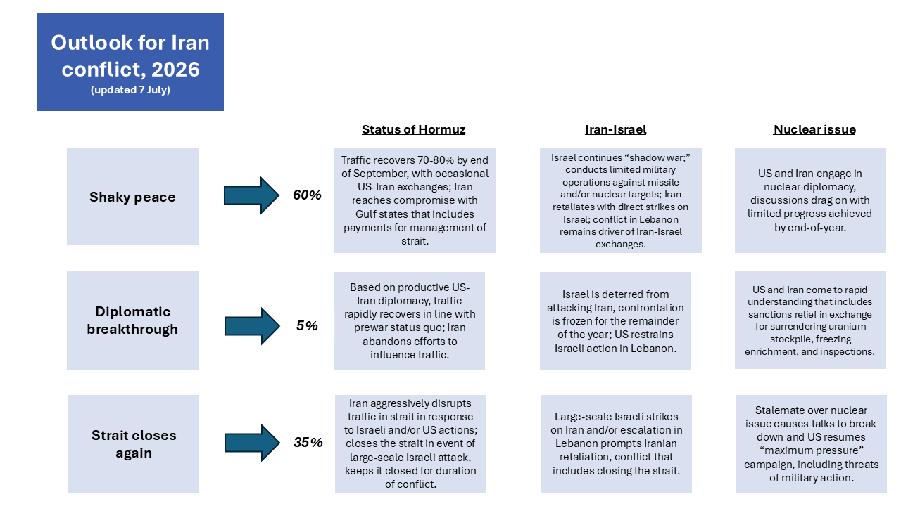
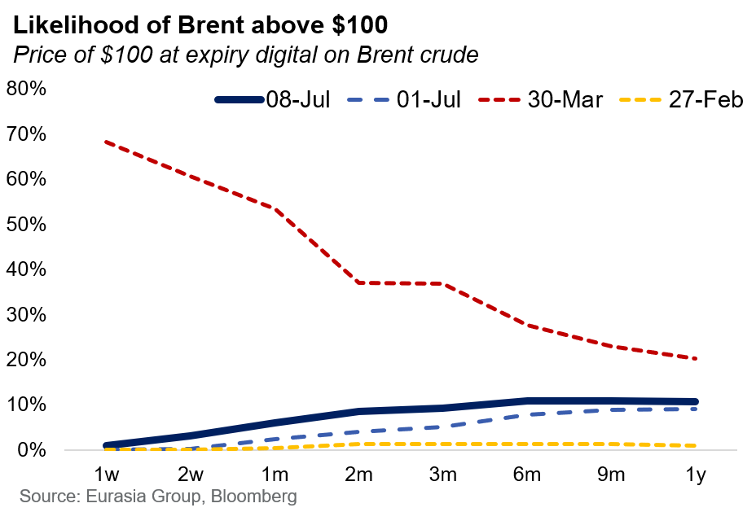
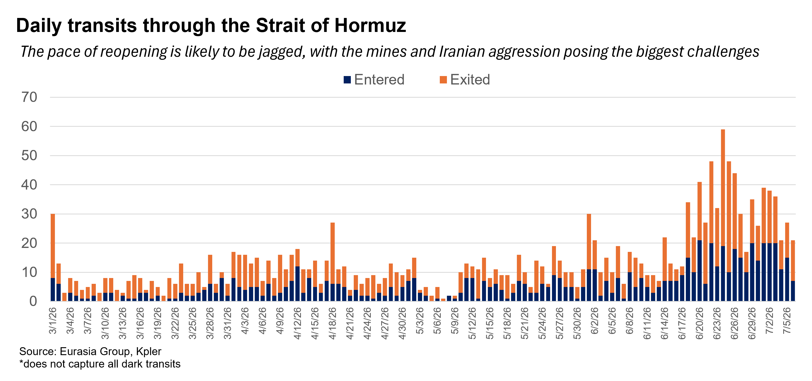
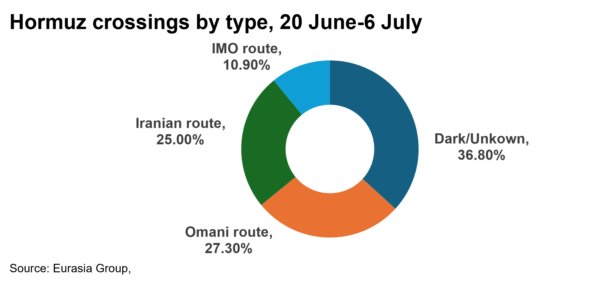
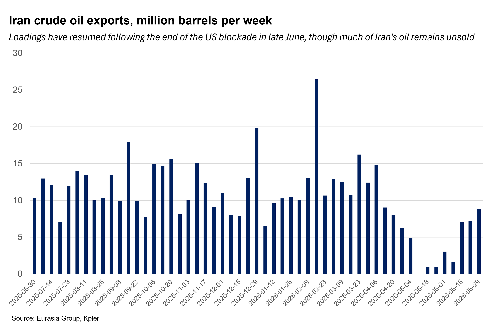

|
 |
|||
|
||||
|
||
Tit-for-tat exchanges will feature in the “shaky peace” basecase. Skirmishing between the US and Iran—such as US strikes on 7 July in response to Iranian attacks on shipping, as well as a similar exchange on 16-25 June—is likely to continue under the shaky peace scenario (60%, down from 65%). Such skirmishing was also frequent following the initial ceasefire in April. The risk of a resumption in hostilities that closes the strait has increased (35%, up from 25%). While neither side is prepared to resume general hostilities, conflict is driven primarily by Iran’s desire to assert its influence over the strait and the lack of any diplomatic breakthrough. The US decision to rescind Iran’s oil sanctions waiver suggests the agreement reached in June (see: Deal will lead to a shaky peace that endures through 2026, 17 June 2026) is under significant pressure and may collapse entirely. Should the US resume its blockade of Iranian ports, Iran would respond with much more aggressive tactics to disrupt traffic in the Strait of Hormuz.  Market is under-pricing risk of an escalation that closes the strait. The options market is assessing the likelihood of an increase in oil prices to $100 for Brent by the end of the year at 15%.  Further recovery in Hormuz traffic will be jagged. Transits have rebounded, with an average of 25-40 ships passing per day, in line with Eurasia Group expectations (see: Flows through Hormuz will recover to 30-50% within a few weeks if a deal is reached, 25 May 2026).  While traffic recovered relatively quickly (see: Deal will allow Hormuz to reopen, with scope for rapid progress, 14 June 2026), getting near pre-war traffic levels will happen at a slower, more jagged pace. Factors slowing the pace of recovery include Iranian aggression, the risk of shipping accidents in Oman’s narrow and partly shallow waters, efforts to demine the main waterway (removing an expected 80-100 mines may take several months), the rate at which shipping returns to the Persian Gulf/Sea of Oman from other areas, and the ongoing efforts to evacuate ships trapped in the strait since February. At this jagged pace, shipping should recover to 70-80% of the prewar level by the end of September. Regional oil producers are likely to continue using alternative routes to reduce exposure to Hormuz bottlenecks. This means that even when the strait is fully reopened, the volume of shipping is unlikely to return to its full prewar level (100-125 daily transits). Longer term (2028 onward) Hormuz traffic will likely further decline as new oil pipelines (e.g. UAE, Saudi Arabia, Iraq-Syria) and port and rail lines that bypass Hormuz. Iran will push its luck, as it seeks more permanent influence and money. Iran is attempting to maximize its leverage in ongoing negotiations with the US. Just as the US has declined to withdraw military forces from the region, so too is Iran declining to fully relax its posture in Hormuz, for fear of weakening its position and losing potential financial benefits it can extract from Gulf states and international shipping companies. Iran’s leadership likely believes there is little US appetite for resuming the war, and therefore little cost in keeping pressure on the strait in order to extract further concessions, including the maximalist demand that ships pay tolls or fees to secure safe passage. In other words, Iran is pushing its luck. Any US strikes in response to Iranian attacks on shipping are unlikely to deter Tehran from pressing its demands.  Iran won’t get tolls but could get a compromise that includes payments from the Gulf. Iran’s ability to fully manage traffic without wartime conditions is limited: since 20 June, only 25% of shipping has passed through Iran’s northern route. This suggests that its ability to realize its ambition—an institutionalized per-ship tolling system—is ultimately constrained. Iran will have to either back down or accept a compromise. Such a compromise could come in the form of an agreement between Iran and Oman to manage the strait, with a fee paid to cover relevant expenses. While the fee could be levied against shipping companies, it is more likely to be paid by other Gulf states, in line with a broader Gulf push to accommodate Iran and thus reduce the risk of a second outbreak of hostilities (see: GCC states will establish détente while pursuing deterrence with Iran, 17 June 2026). Discussions among Gulf leaders are ongoing—timing on a resolution is unclear. Iran's ability to earn revenue from oil now depends on China lifting import restrictions. While the US revoked the waiver permitting Iran to sell oil free of sanctions in response to Iran’s attacks on tankers, Iran had made little progress in finding buyers and was likely to sell to its traditional customer base in China. That base, however, has not yet resumed buying oil in large quantities, as Chinese crude imports remain depressed (see: Gulf supply flood will keep Brentin $65-$80 range in 2026, 26 June 2026). Iran’s eagerness to export crude will contribute to lower prices, but the loss of the waiver—at least for now—and the difficulty in realizing any gains from oil exports will increase Iran’s interest in extracting monetary rewards from the strait, contributing to the ongoing tit-for-tat exchanges with the US.  |